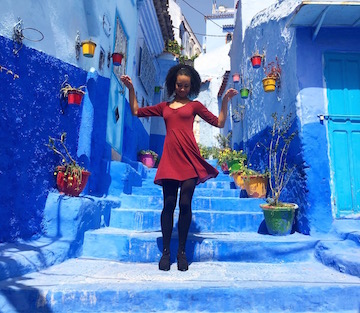

Hey, I'm Deziree!

Biography
Greetings! My name is Deziree Teague and I was born and raised in Seattle, Washington. I recently moved back to the Pacific Northwest after spending 5 years abroad. I am thrilled to be studying software devlopment at Code Fellows and I look forward to transitioning my career into tech!
Outside of work, I love to spend time outdoors. These are a few cool activities I have experienced over the years:
- zip-lining
- white-water rafting
- hiking Mount Fuji in Japan
- repelling off a cliff in Costa Rica
- scuba diving at the Great Barrier Reef
- stand up paddle boarding on Lake Washington
Education
I graduated from the University of Washington in 2011 with a bachelor's degree in Communication and a minor in Diversity. During my time there, I had the opportunity to study abroad which fueled my love for travel! My first study abroad trip was to Buenos Aires, Argentina in 2010. I also studied in the northeastern state of Bahia, Brazil in the spring of 2011.
Work & Travel Experience
In 2013, I moved to Heredia, Costa Rica to complete my certification in Teaching English as a Foreign Language (TEFL). Since then, I have taught English to students ranging from preschoolers to retired adults! Teaching allowed me to live and work in Costa Rica, Guatemala, Spain, and Australia. These experiences taught me resourcefulness, adaptability, and interpersonal communication.
My Top 10 International Travel Experiences (in no particular order):
- Greece
- Brazil
- India
- Spain
- Morrocco
- Argentina
- Thailand
- Australia
- Costa Rica
- Czech Republic

Goals
Upon graduation from Code Fellows, I hope to start my career as a full-stack developer.